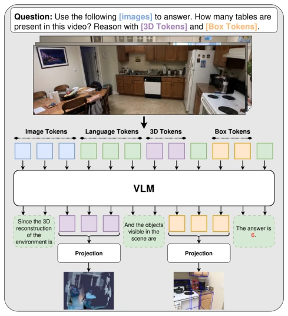
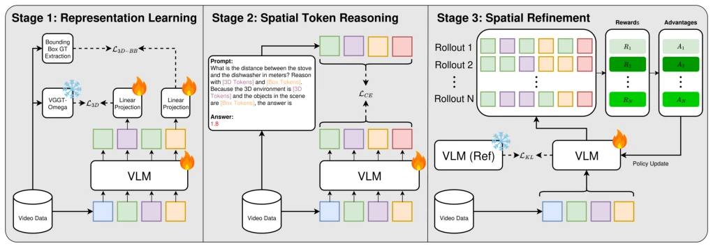
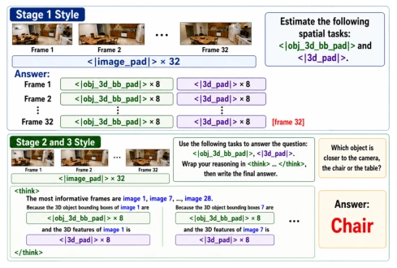
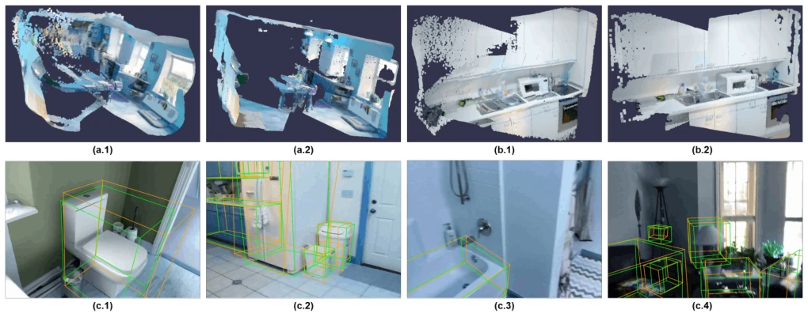

This paper administers a "spatial thinking" booster shot to VLMs without performing surgery. The core logic of Space Tokens is quite clever: since modifying the architecture directly is too expensive, it is better to "distill" 3D geometric knowledge into several special continuous hidden vectors, allowing the model to learn spatial sense while "thinking". This approach indeed saves extra modules during inference, like installing an invisible add-on for VLMs. However, the "verifiability" boasted by the authors is a bit hollow; after all, the decoded 3D reconstruction is merely "meaningful" rather than "perfect", far from industrial-grade accuracy. Moreover, this method relying on distillation from a specific Teacher model (VGGT-Omega) is essentially "standing on the shoulders of giants"; if the Teacher itself has bias, the student also goes astray. Overall, this is a clever engineering optimization, trading training for inference efficiency, but do not expect it to solve all long-horizon spatial planning problems single-handedly, after all, it still has to rely on SFT and RL to "rote memorize" spatial relationships.
The core of embodied intelligence lies in spatial understanding, but existing VLMs still appear clumsy in spatial reasoning, especially in long-horizon tasks (such as path planning), far inferior to humans. There are mainly three paths to improve spatial capabilities currently: one is simply expanding model scale and data (such as Qwen3-VL, Gemini), but this leads to a surge in computational costs and diminishing marginal returns; two is introducing explicit spatial architecture modules (such as SpaceMind, VLM-3R), but this adds extra modules during inference, reducing the model's portability and efficiency; three is utilizing implicit Tokens (such as CoVT), but this mainly focuses on 2D visual perception, without deeply mining explicit 3D geometric knowledge. Existing methods are either "too big and impractical" or "heavy and difficult to use", lacking a lightweight, architecture-agnostic solution capable of explicitly encoding 3D geometry. This paper aims to fill this gap, internalizing scene-level geometry and object-level spatial attributes through lightweight training, avoiding extra overhead during inference.

Figure 1: Space Tokens Overview. Our approach embeds interpretable scene-level and object-centric spatial represen- tations directly into the VLM for use during autoregressive reasoning. The learned tokens improve spatial reasoning and can be decoded into explicit spatial modalities to verify the model’s learned geometric understanding
This paper proposes the Space Tokens framework, injecting spatial knowledge into VLMs through a three-stage Pipeline. The first stage is representation learning: utilizing VGGT-Omega as a Teacher, distilling scene-level 3D geometry (depth, point cloud, camera pose) and object-level 3D bounding boxes (position, orientation, size) into continuous hidden vectors reserved for the VLM. The loss function includes latent space alignment (Cosine Distance) and multi-task reconstruction loss (camera, depth, point cloud), ensuring the hidden vectors contain decodable geometric information. The second stage is spatial reasoning fine-tuning (SFT): freezing the projection layer, allowing the model to learn to call these spatial Tokens in Chain-of-Thought through standard Next-Token Prediction, while retaining alignment loss as regularization. The third stage is spatial reinforcement learning (GRPO): utilizing the VSI-Bench reward function to further optimize the model's spatial reasoning strategy. Throughout the process, spatial Tokens are part of the VLM's native vocabulary, requiring no extra modules during inference, and the decoder is only used for verification, not adding inference burden.

Figure 2: Overview of the proposed three-stage Space Tokens training pipeline. Stage 1 learns continuous spatial token representations by distilling scene-level 3D geometry from VGGT-Omega and object-centric spatial attributes into reserved output vocabulary tokens. Stage 2 supervises the VLM to reason with the learned spatial tokens through standard next-token prediction SFT. Stage 3 further refines spatial reasoning using reinforcement learning. After stage 1, all spatial reasoning is performed using the learned latent tokens without requiring additional model parameters.

Figure 3: Prompt formats used across training stages. Top (Stage 1): We perform representation learning by training the dedicated slots to encode spatial information. Bottom (Stages 2 and 3): We leverage the learned representations to improve the model’s spatial reasoning, first through SFT and then through GRPO trainings.
Experiments are conducted on VSI-Bench, covering 8 categories of spatial tasks. Baselines include Qwen3-VL-8B and SenseNova-SI-1.3. Results show that Space Tokens improved Qwen3-VL-8B by 4.3%, SenseNova-SI-1.3 by 1.3%, and achieved SOTA on object size (79.2%) and room size (75.7%) estimation. Ablation studies show that removing any spatial modality (3D reconstruction or bounding box) leads to performance degradation, and simply increasing data (VICA-322K) without introducing Space Tokens leads to overfitting. Furthermore, on OOD benchmarks (BLINK, CV-Bench, NExT-QA), the model maintained good generalization ability, even improving by 5.6% on video QA (NExT-QA). Qualitative results show that the decoded 3D scenes and bounding boxes, while not perfect, can capture key geometric structures.

Figure 4: Qualitative comparison of generated 3D scenes (Top) and predicted 3D object bounding boxes (Bottom). (a.1) and (b.1) showcase the decoded 3D token predictions, while (a.2) and (b.2) depict the corresponding expert predictions from VGGT- Omega. In the bottom images, (c.1-4), the orange lines show the prediction and the green lines show the ground truth.